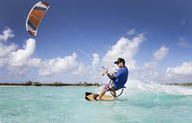
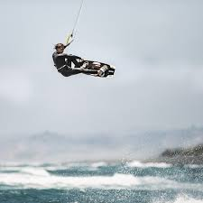
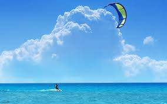

KiteBoarding Is The Best!
Kiteboarding, also known as kitesurfing, is an exhilarating water sport that combines elements of surfing, windsurfing, and paragliding. It involves riding a board while being pulled by a large kite, allowing riders to harness the power of the wind to
glide across the water and perform impressive aerial tricks. Here's a comprehensive look at this exciting sport:
Things You Will Need
- Harness
- Bar
- Chicken Loop
- Chicken Stick
- Line Connections
- Lines
- Kiteboard
- Kite
- 6-15 Instruction Hours
.jpeg)
Kiteboarding Equipment
The kite is the most crucial piece of equipment. It comes in various sizes, typically ranging from 5 to 17 square meters, depending on the wind conditions and the rider's weight and skill level. Kites are usually inflatable or foil types. Board:Kiteboards resemble wakeboards or small surfboards. They come in different shapes and sizes, including twin-tip boards (symmetrical and can be ridden in both directions) and directional boards (similar to surfboards). Harness:
The harness is worn around the rider's waist or hips and is attached to the control bar, which connects to the kite. It helps distribute the kite's pull and allows the rider to control the kite with their body. Control Bar: The control bar is used to steer the kite. It has lines that connect to the kite and allows the rider to adjust the kite's angle and power. Safety Leash: This is a crucial safety feature that ensures the kite remains attached to the rider in case they lose control.
.jpeg)
Learning to Fly the Kite
Kite Control:Practicing with a trainer kite on land to get a feel for steering and controlling the kite. Body Dragging:
Learning to use the kite to pull oneself through the water without the board, which helps in understanding how to generate power and control direction. Water Start: Combining kite control with the board to get up and ride on the water. This involves coordinating the kite's power with the board's movement. The Thrill of Kiteboarding Adrenaline Rush:
Kiteboarding offers an unparalleled adrenaline rush. The sensation of being propelled by the wind, the speed, and the ability to perform jumps and tricks make it an exciting sport. Riders can reach impressive heights and distances, performing maneuvers like jumps, spins, and flips.
Connection with Nature:
Kiteboarding provides a unique way to connect with nature. Riders experience the power of the wind and the beauty of the water, often in stunning locations like tropical beaches, lakes, and coastal areas. The sport encourages environmental awareness and respect for natural elements.
Physical and Mental Benefits:
Kiteboarding is a full-body workout that improves strength, balance, and coordination. It engages core muscles, legs, and upper body, providing a comprehensive fitness routine. Mentally, it requires focus, quick decision-making, and adaptability, enhancing cognitive skills and reducing stress.
Learn to Kite Board Today!!! Click Here

Kiteboarding Vacation Spots
Popular Kiteboarding DestinationsTarifa, Spain:
Known as the kiteboarding capital of Europe, Tarifa offers consistent winds and a vibrant kiteboarding community. The Strait of Gibraltar creates ideal wind conditions, attracting riders from around the world.
Maui, Hawaii:
Maui's North Shore is famous for its strong winds and large waves, making it a popular destination for advanced kiteboarders. The island's stunning scenery and warm waters add to its appeal.
Cape Town, South Africa:
Cape Town's Bloubergstrand Beach is renowned for its reliable winds and breathtaking views of Table Mountain. The location hosts international kiteboarding competitions and offers diverse riding conditions.
Boracay, Philippines:
Boracay's Bulabog Beach is a kiteboarding paradise with steady winds and shallow waters. The island's tropical climate and vibrant nightlife make it a favorite among kiteboarders.
Red Sea, Egypt:
The Red Sea offers crystal-clear waters and consistent winds, making it an excellent destination for kiteboarding. Spots like El Gouna and Dahab provide ideal conditions for both beginners and advanced riders.

Be Safe While Having Fun
Safety ConsiderationsWeather Awareness:
Understanding weather conditions is crucial for safe kiteboarding. Riders should be aware of wind speed, direction, and potential changes in weather. Avoiding storms and strong offshore winds is essential.
Safety Gear:
Wearing appropriate safety gear, including a helmet, impact vest, and wetsuit, can prevent injuries. The safety leash and quick-release system on the control bar are vital for detaching from the kite in emergencies.
Respecting Others:
Kiteboarders should respect other water users, including swimmers, surfers, and boaters. Maintaining a safe distance and following local regulations ensures a harmonious environment for everyone.

Kiteboarding Culture
The Community and CultureKiteboarding Community:
The kiteboarding community is known for its camaraderie and support. Riders often share tips, help each other with equipment, and celebrate each other's achievements. The sport fosters a sense of belonging and friendship.
Competitions and Events:
Kiteboarding competitions showcase the sport's best talents and innovations. Events like the Red Bull King of the Air and the Kiteboarding World Cup attract top riders and enthusiastic spectators. These competitions push the boundaries of what's possible in the sport.
Sustainability Efforts:
Many kiteboarders are passionate about environmental conservation. Initiatives like beach clean-ups, sustainable equipment production, and promoting eco-friendly practices are common within the community.
Conclusion
Kiteboarding is more than just a sport; it's a lifestyle that combines adventure, fitness, and a deep connection with nature. Whether you're a beginner learning to control the kite or an experienced rider performing aerial tricks, kiteboarding offers endless excitement and challenges. With its growing popularity and supportive community, kiteboarding continues to inspire and attract enthusiasts worldwide. So, grab your kite, hit the water, and experience the thrill of kiteboarding for yourself!
Learn to Kite Board Today!!! Click Here
Here is some information on the top kiteboarders today!

Jump to Top